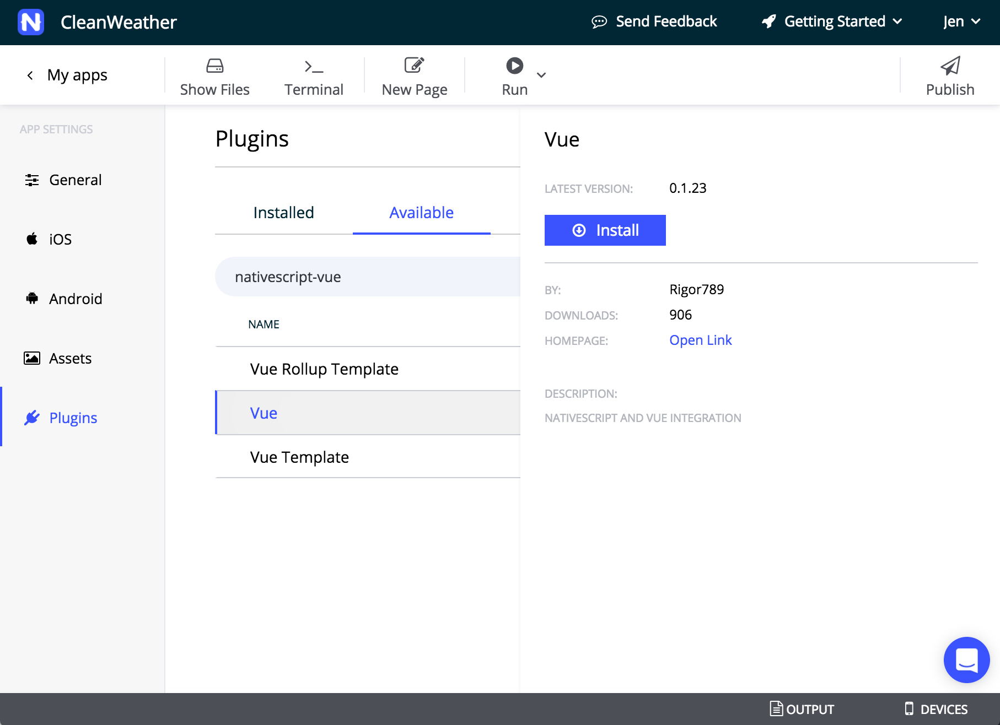

<!--
Copyright (c) 2016 Google Inc.

Licensed under the Apache License, Version 2.0 (the "License"); you may not
use this file except in compliance with the License. You may obtain a copy of
the License at

    http://www.apache.org/licenses/LICENSE-2.0

Unless required by applicable law or agreed to in writing, software
distributed under the License is distributed on an "AS IS" BASIS, WITHOUT
WARRANTIES OR CONDITIONS OF ANY KIND, either express or implied. See the
License for the specific language governing permissions and limitations under
the License.
-->
<link rel="import" href="../../step-style.html">
<link rel="import" href="../../syntax-style.html">

<dom-module id="step-3">
   <style include="step-style"></style>
   <style include="syntax-style"></style>

  <template>
    <p>Now that you have scaffolded a basic app, let's add the Vue plugin.</p>

    <p>Navigate to the app's 'General' page in Sidekick and select 'Plugins' on the side. A panel appears with a list of the plugins
      that are already installed, as seen in your app's outer package.json file. Navigate to the 'Available' plugins tab and search for 'nativescript-vue'. 
      Select 'Vue', the plugin built by community member Igor Randjelovic (@Rigor789). Click the gear icon and then 'install'. This will add the plugin to your
      package.json file and it will appear in the 'installed' panel in Sidekick.
    </p>

    

    <p>Let's build out our Vue.js code prior to integrating the logic that will give us a weather reading.</p>

    <p>In a basic NativeScript-Vue app, most of your app logic will reside in an app.js file in the root of the app.
      So, open your CleanWeather app in the IDE of your choice, and delete the /home folder entirely. Then,
      open the inner package.json file (the one that lives inside the app folder) and change its contents to this: 
    </p>

  <pre>
    {
      "main": "app.js",
      "name": "clean-weather",
      "version": "0.1.0"
    }
  </pre>

  <p>Then, edit the app.js file to turn it into a Vue.js file</p>

  <pre>
      const Vue = require('nativescript-vue/dist/index')
      
      let app = new Vue({
          data: () => {
              return {
                  city: 'My Location',
                  summary: 'My Current Weather',
                  currentTemperature: '',
                  apparentTemperature: '',
                  humidity: '',
                  windSpeed: '',
                  visibility: '',
                  day: '',
                  time: '',
                  image: ''
              }
          },
          
          template: `
          &#x3C;page&#x3E;
          &#x3C;grid-layout rows=&#x22;auto,*&#x22;&#x3E;
              &#x3C;stack-layout&#x3E;
                  &#x3C;label class=&#x22;bold&#x22; :text=&#x22;city&#x22;&#x3E;&#x3C;/label&#x3E;
                  &#x3C;label :text=&#x22;summary&#x22;&#x3E;&#x3C;/label&#x3E;
                  &#x3C;image height=&#x22;150&#x22; class=&#x22;weather-image&#x22; :src=&#x22;image&#x22;&#x3E;&#x3C;/image&#x3E;
                      
                  &#x3C;grid-layout class=&#x22;weather-box&#x22; columns=&#x22;1*,1*&#x22; rows=&#x22;auto&#x22;&#x3E;
                          &#x3C;label col=&#x22;0&#x22; row=&#x22;0&#x22; class=&#x22;large&#x22; :text=&#x22;currentTemperature&#x22;&#x3E;&#x3C;/label&#x3E;
                          &#x3C;stack-layout col=&#x22;1&#x22; row=&#x22;0&#x22;&#x3E;
                              &#x3C;label class=&#x22;small bold&#x22; text=&#x22;details&#x22;&#x3E;&#x3C;/label&#x3E;
                              &#x3C;stack-layout class=&#x22;hr-light tight&#x22;&#x3E;&#x3C;/stack-layout&#x3E;
                              &#x3C;label class=&#x22;small&#x22; :text=&#x22;apparentTemperature&#x22;&#x3E;&#x3C;/label&#x3E;
                              &#x3C;label class=&#x22;small&#x22; :text=&#x22;humidity&#x22;&#x3E;&#x3C;/label&#x3E;
                              &#x3C;label class=&#x22;small&#x22; :text=&#x22;windSpeed&#x22;&#x3E;&#x3C;/label&#x3E;
                              &#x3C;label class=&#x22;small&#x22; :text=&#x22;visibility&#x22;&#x3E;&#x3C;/label&#x3E;
                          &#x3C;/stack-layout&#x3E;                    
                  &#x3C;/grid-layout&#x3E;
              &#x3C;/stack-layout&#x3E;
              
              &#x3C;stack-layout row=&#x22;1&#x22;&#x3E;
  
              &#x3C;stack-layout class=&#x22;hr-light&#x22;&#x3E;&#x3C;/stack-layout&#x3E;
                  
              &#x3C;label :text=&#x22;day&#x22;&#x3E;&#x3C;/label&#x3E;
                  
              &#x3C;stack-layout class=&#x22;hr-light&#x22;&#x3E;&#x3C;/stack-layout&#x3E;                
                  
              &#x3C;label :text=&#x22;time&#x22;&#x3E;&#x3C;/label&#x3E;
              
              &#x3C;/stack-layout&#x3E;
           
          &#x3C;/grid-layout&#x3E;
          
          &#x3C;/page&#x3E;
          `,
      
          created() {
              this.getMyWeather()     
          },
          
          methods: { 
              getMyCity(lat,long){
                  
              },  
              setImage(icon) {
                  
              },
              getMyWeather() {
                  
              }
          }
      })
      
      app.$start()
  </pre>

<p>In a few lines, you have created a one-page app that has a template and some placeholders for methods that will fill the template's bound components.
  Notice the way that this file has a template element and a methods element. This is a common Vue.js design pattern.
  The first method that will be invoked is created(), which calls the method getMyWeather(). The other two methods 
  set the locale's latitude and longitude, make an http call to Forecast.io, and draw the screen based on the returned data.
</p>

<p>Run your app from within Sidekick by starting an emulator, selecting it in Sidekick, and clicking 'run on device' at the bottom. It looks pretty terrible, so let's fix the css!</p>

<p>In the root of the app, overwrite the css in app.css with the following:</p>

<pre>
    @import 'nativescript-theme-core/css/core.light.css';
    
    Page {
        margin: 30;
    }
    
    label {
        margin: 10 0;
        font-family: "Quicksand";
        font-size: 20;
        text-transform: uppercase; 
        text-align: center; 
    }
    
    .hr-light {
        margin: 30 0;
    }
    
    .bold {
        font-weight: bold;
    }
    
    .weather-image {
        margin: 10 40;
    }
    
    .weather-box {
        margin-top: 10;
    }
    
    .large {
        font-size: 60;
        vertical-align: top;
    }
    
    .small {
        font-size: 15;
        margin: 0;
        text-align: left;
    }
    
    .tight {
        margin: 5
    }
</pre>

<p>Now it looks a little better, but let's add some fonts and images. 
  Download <a href="images/assets.zip">these assets</a> to your local computer
  and place the /fonts and /images folders in the root of your app.
</p>

<p>To pick up these new fonts, you need to rebuild the app, so click 'Build' and then 'Run on Device' again.</p>

<p>Next, we need to get the device's location, so continue on to the next section!</p>

    

  </template>
  <script>
    Polymer({
      is: "step-3"});
  </script>
</dom-module>
